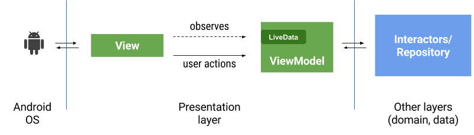
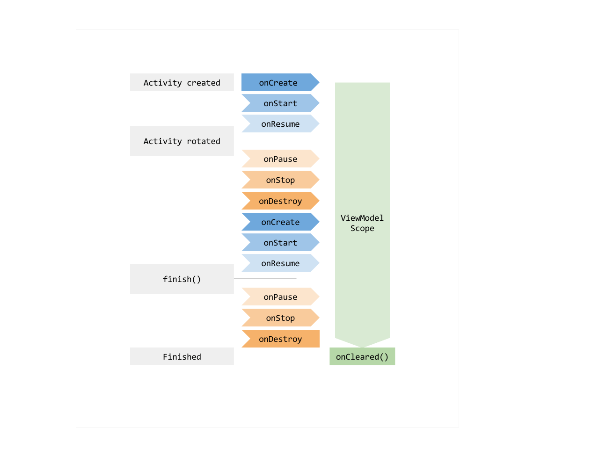
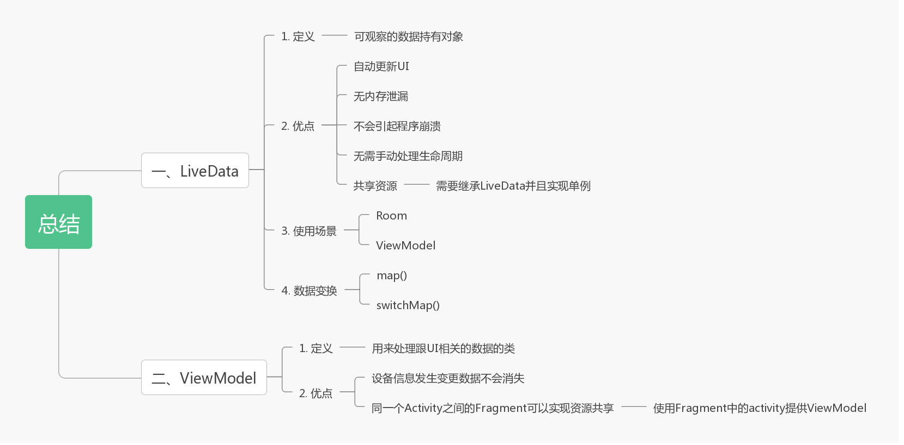

LiveData 官方文档：LiveData
在讲 LiveData 之前，我们先看看 LiveData 和 ViewModel 的作用：

从这一张图，我们可以看出 ViewModel 和 LiveData 在整个MVVM架构中担当数据驱动的职责，这也是 MVVM 模式中 ViewModel 层的作用。
介绍 看了上面的图，对于 LiveData 我们还是感到疑惑，那么我们看看官网是如何定义的：
LiveData is an observable data holder class. Unlike a regular observable, LiveData is lifecycle-aware, meaning it respects the lifecycle of other app components, such as activities, fragments, or services.
从官网的介绍可以看到，LiveData 作用跟 RxJava 类似，是观察数据的类，相比 RxJava，它能够在 Activity、Fragment 和 Service 之中正确的处理生命周期。那么 LiveData 有什么优点呢？
数据变更的时候更新UI
没有内存泄漏
不会因为停止Activity崩溃
无需手动处理生命周期
共享资源
乍看之下 LiveData 挺鸡肋的，事实也确实如此，因为 LiveData 能够实现的功能 RxJava 也可以实现，而且与 LiveData 相比，RxJava 拥有着更加丰富的生态，当然，谷歌的官方架构仍然值得我们去学习。
使用方式 LiveData 常用的方法也就如下几个：
方法名
作用
observe(@NonNull LifecycleOwner owner, @NonNull Observer<? super T> observer)
最常用的方法，需要提供 Observer 处理数据变更后的处理。LifecycleOwner 则是我们能够正确处理声明周期的关键。
setValue(T value)
设置数据。
getValue():T
获取数据。
postValue(T value)
在主线程中更新数据。
使用场景 我看见绝大部分的 LiveData 都是配合其他 Android Jetpack 组件使用的，具体情况具体分析。
ViewModel: 见下文。
Room：先参考Demo，文章后续推出。
ViewModel 官方文档：ViewModel 教程 https://github.com/googlecodelabs/android-lifecycles
众所周知，MVVM 层中 ViewModel 层用来作逻辑处理的，那么我们 Android Jetpack 组件中 ViewModel 的作用是否也一致呢？
介绍 我们先来看官网的介绍：
The ViewModel class is designed to store and manage UI-related data in a lifecycle conscious way. The ViewModel class allows data to survive configuration changes such as screen rotations.
ViewModel 同样具有生命周期意识的处理跟UI相关的数据，并且，当设备的一些配置信息改变（例如屏幕旋转）它的数据不会消失。
通常情况下，如果我们不做特殊处理，当屏幕旋转的时候，数据会消失，那 ViewModel 管理的数据为什么不会消失呢，是因为 ViewModel 的生命周期：

ViewModel 的另一个特点就是同一个 Activity 的 Fragment 之间可以使用 ViewModel 实现共享数据。
使用方法 继承 ViewModel 即可。
实战 第一步：添加依赖 添加进 module 下面的 build.gradle ：
1 2 3 4 5 6 7 8 9 10 ext.lifecycleVersion = '2.2.0-alpha01' dependencies { //... // liveData implementation "androidx.lifecycle:lifecycle-livedata-ktx:$rootProject.lifecycleVersion" // viewModel implementation "androidx.lifecycle:lifecycle-viewmodel-ktx:$rootProject.lifecycleVersion" implementation "androidx.lifecycle:lifecycle-extensions:$rootProject.lifecycleVersion" }
第二步：创建 ShoeModel 继承 ViewModel 类，分别创建对品牌名的观察对象 brand:MutableLiveData<String> 和对鞋子集合的观察对象 shoes: LiveData<List<Shoe>> ：
1 2 3 4 5 6 7 8 9 10 11 12 13 14 15 16 17 18 19 20 21 22 23 class ShoeModel constructor(shoeRepository: ShoeRepository) : ViewModel() { // 品牌的观察对象 默认观察所有的品牌 private val brand = MutableLiveData<String>().apply { value = ALL } // 鞋子集合的观察类 val shoes: LiveData<List<Shoe>> = brand.switchMap { // Room数据库查询，只要知道返回的是LiveData<List<Shoe>>即可 if (it == ALL) { shoeRepository.getAllShoes() } else { shoeRepository.getShoesByBrand(it) } } //... 不重要的函数省略 companion object { private const val ALL = "所有" } }
第三步：获取 ViewModel 无构造参数获取： ViewModelProviders.of(this).get(ShoeModel::class.java) 这样就可以返回一个我们需要的 ShoeModel 了。
有构造参数获取：
1 2 3 4 5 class ShoeModelFactory(private val repository: ShoeRepository) : ViewModelProvider.NewInstanceFactory() { override fun <T : ViewModel?> create(modelClass: Class<T>): T { return ShoeModel(repository) as T } }
为了使用方便，又写了一个工具类 CustomViewModelProvider：
1 2 3 4 5 6 7 8 9 object CustomViewModelProvider { // ...省略无关代码 fun providerShoeModel(context: Context):ShoeModelFactory{ val repository:ShoeRepository = RepositoryProvider.providerShoeRepository(context) return ShoeModelFactory(repository) } }
最后在 ShoeFragment 中获取：
1 2 3 4 // by viewModels 需要依赖 "androidx.navigation:navigation-ui-ktx:$rootProject.navigationVersion" private val viewModel: ShoeModel by viewModels { CustomViewModelProvider.providerShoeModel(requireContext()) }
第四步：使用 ViewModel ViewModel 的使用需要结合具体的业务，比如我这里的 ShoeModel，因为 ShoeFragment 的代码不多，我直接贴出来：
1 2 3 4 5 6 7 8 9 10 11 12 13 14 15 16 17 18 19 20 21 22 23 24 25 26 27 28 29 30 31 32 33 34 35 36 /** * 鞋子集合的Fragment * */ class ShoeFragment : Fragment() { // by viewModels 需要依赖 "androidx.navigation:navigation-ui-ktx:$rootProject.navigationVersion" private val viewModel: ShoeModel by viewModels { CustomViewModelProvider.providerShoeModel(requireContext()) } override fun onCreateView( inflater: LayoutInflater, container: ViewGroup?, savedInstanceState: Bundle? ): View? { val binding: FragmentShoeBinding = FragmentShoeBinding.inflate(inflater, container, false) context ?: return binding.root ViewModelProviders.of(this).get(ShoeModel::class.java) // RecyclerView 的适配器 ShoeAdapter val adapter = ShoeAdapter() binding.recycler.adapter = adapter onSubscribeUi(adapter) return binding.root } /** * 鞋子数据更新的通知 */ private fun onSubscribeUi(adapter: ShoeAdapter) { viewModel.shoes.observe(viewLifecycleOwner, Observer { if (it != null) { adapter.submitList(it) } }) } }
在 onSubscribeUi 方法中，我们使用 ShoeModel 的 LiveData 进行了观察通知，当鞋子集合更新的时候，会更新到当前 RecyclerView 中的适配器。
布局文件 fragment_shoe.xml 很简单，虽使用了 Data Binding，但是没有变量，且只有一个 RecyclerView，这里不再赘述。ShoeAdapter 的实现同样简单，感兴趣的可以查看源码，这里同样不再赘述。
更多 一个例子并不能展现所有的关于 LiveData 和 ViewModel 的内容。LiveData 和 ViewModel 仍有一些知识需要我们注意。
LiveData 数据变换 LiveData 中数据变换方法有 map() 和 switchMap()，关于 switchMap()，我在上面实战的 ShoeModel 已经实践过了：
1 2 3 4 5 6 7 8 9 10 11 12 13 14 15 16 17 18 19 20 21 22 23 24 25 26 27 28 29 30 31 32 33 34 35 // 本地数据仓库 class ShoeRepository private constructor(private val shoeDao: ShoeDao) { fun getAllShoes() = shoeDao.getAllShoes() /** * 通过品牌查询鞋子 返回 LiveData<List<Shoe>> */ fun getShoesByBrand(brand:String) = shoeDao.findShoeByBrand(brand) /** * 插入鞋子的集合 返回 LiveData<List<Shoe>> */ fun insertShoes(shoes: List<Shoe>) = shoeDao.insertShoes(shoes) // ... 单例省略 } class ShoeModel constructor(shoeRepository: ShoeRepository) : ViewModel() { // 品牌的观察对象 默认观察所有的品牌 private val brand = MutableLiveData<String>().apply { value = ALL } // 鞋子集合的观察类 val shoes: LiveData<List<Shoe>> = brand.switchMap { // Room数据库查询，只要知道返回的是LiveData<List<Shoe>>即可 if (it == ALL) { shoeRepository.getAllShoes() } else { shoeRepository.getShoesByBrand(it) } } }
map() 的使用我们借用官方的例子：
1 2 3 4 val userLiveData: LiveData<User> = UserLiveData() val userName: LiveData<String> = Transformations.map(userLiveData) { user -> "${user.name} ${user.lastName}" }
可以看到，map() 同样可以实现将 A 变成 B，那么 switchMap() 和 map() 的区别是什么？map() 中只有一个 LiveData，他是在 LiveData 发送数据的时候把 A 变成 B，而 switchMap() 中同时存在 LiveData 和 LiveData，LiveData 更新之后通知 LiveData 更新。
LiveData 如何共享数据 假设我们有这样的需求：注册页需要记录信息，注册完成跳转到登录页，并将账号和密码显示在登录页。这种情况下，我们可以定义一个类然后继承 LiveData，并使用单例模式即可：
1 2 3 4 5 6 7 8 9 10 11 12 13 14 15 16 17 18 // 登录信息 data class LoginInfo constructor(val account:String, val pwd:String, val email:String) /** * 自定义单例LiveData */ class LoginLiveData:LiveData<LoginInfo>() { companion object { private lateinit var sInstance: LoginLiveData @MainThread fun get(): LoginLiveData { sInstance = if (::sInstance.isInitialized) sInstance else LoginLiveData() return sInstance } } }
需要实例的时候用单例创建即可。
使用 ViewModel 在同一个 Activity 中的 Fragment 之间共享数据 想要利用 ViewModel 实现 Fragment 之间数据共享，前提是 Fragment 中的 FragmentActivity 得相同，这里直接贴上官方的代码：
1 2 3 4 5 6 7 8 9 10 11 12 13 14 15 16 17 18 19 20 21 22 23 24 25 26 27 28 29 30 31 32 33 34 35 36 37 38 39 class SharedViewModel : ViewModel() { val selected = MutableLiveData<Item>() fun select(item: Item) { selected.value = item } } class MasterFragment : Fragment() { private lateinit var itemSelector: Selector private lateinit var model: SharedViewModel override fun onCreate(savedInstanceState: Bundle?) { super.onCreate(savedInstanceState) model = activity?.run { ViewModelProviders.of(this).get(SharedViewModel::class.java) } ?: throw Exception("Invalid Activity") itemSelector.setOnClickListener { item -> // Update the UI } } } class DetailFragment : Fragment() { private lateinit var model: SharedViewModel override fun onCreate(savedInstanceState: Bundle?) { super.onCreate(savedInstanceState) model = activity?.run { ViewModelProviders.of(this).get(SharedViewModel::class.java) } ?: throw Exception("Invalid Activity") model.selected.observe(this, Observer<Item> { item -> // Update the UI }) } }
总结 